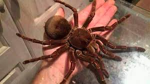
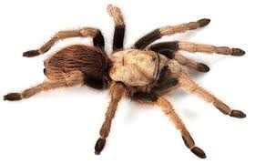
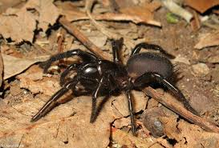
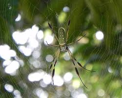
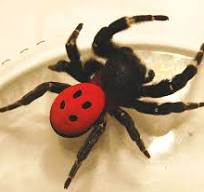

Tipos de Arañas Migalomorfas
Las migalomorfas son un grupo de arañas que suelen ser grandes y robustas. A menudo se encuentran en hábitats terrestres y son conocidas por sus características distintivas, como sus colmillos grandes y su comportamiento solitario.
Tipos de Migalomorfas
- Tarantula Goliat (*Theraphosa blondi*): La araña más grande del mundo, encontrada en las selvas de Sudamérica. Su tamaño puede alcanzar hasta 30 cm de envergadura.

- Tarantula del desierto (*Aphonopelma chalcodes*): Común en el suroeste de EE. UU., esta tarántula es adaptada a climas áridos y puede llegar a medir 10 cm de largo.

- Araña de embudo de Australia (*Hadronyche*): Conocida por su veneno potente, se encuentra en zonas húmedas de Australia y suele medir entre 5 y 7 cm.

- Araña de saco de seda (*Atypus affinis*): Esta araña construye tubos de seda en el suelo y se encuentra en Europa, con un tamaño de aproximadamente 3 a 4 cm.

- Araña de terciopelo (*Lycosa tarantula*): Aunque más relacionada con las arañas lobo, se considera parte de este grupo y mide alrededor de 5 a 8 cm.

Tabla Comparativa de Migalomorfas
| Especie |
Tamaño Promedio |
Hábitat |
Dieta |
| Tarantula Goliat |
Hasta 30 cm |
Selvas de Sudamérica |
Insectos y pequeños vertebrados |
| Tarantula del desierto |
10 cm |
Climas áridos (EE. UU.) |
Insectos |
| Araña de embudo de Australia |
5-7 cm |
Zonas húmedas de Australia |
Insectos |
| Araña de saco de seda |
3-4 cm |
Europa |
Insectos |
| Araña de terciopelo |
5-8 cm |
Variedad de hábitats |
Insectos |